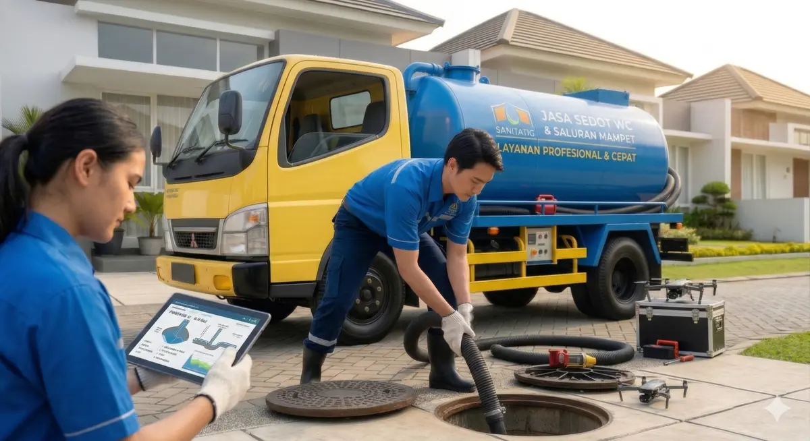

Pusat Sedot WC Jawa Barat - Profesional, Bersih, dan Bergaransi

Kondisi darurat tidak mengenal waktu. Saat WC tiba-tiba mampet, saluran air tersumbat, atau septic tank mendadak meluap hingga menimbulkan bau tak sedap di rumah Anda, kepanikan adalah hal yang wajar. Anda butuh solusi CEPAT, BERSIH, dan TUNTAS hari ini juga.
Selamat datang di Pusat Sedot WC Jawa Barat (Cabang Bekasi). Kami adalah perusahaan spesialis sanitasi dan limbah domestik terkemuka yang siap menjadi pahlawan bagi masalah pembuangan di rumah, ruko, maupun pabrik Anda.
Kami sangat menghargai kejujuran. Berikut adalah estimasi biaya layanan kami di wilayah Bekasi. Harga yang Anda bayar adalah harga yang disepakati di awal!
| Jenis Layanan Sanitasi | Estimasi Biaya |
|---|---|
| Sedot Septic Tank (Per Kubik / Per Strip) | Rp 400.000 |
| Paket Borongan (Terima Beres) | Hubungi Admin |
| Jasa Pelancaran Mampet (Tanpa Sedot) | Mulai dari Rp 400.000 |
1. Berapa lama armada sampai ke rumah saya di Bekasi?
Tergantung titik kemacetan, namun kami selalu mengirimkan armada terdekat dari pool kami di area Anda. Estimasi kedatangan normal adalah 30 hingga 60 menit.
2. Apakah ada garansi jika beberapa hari kemudian WC mampet lagi?
Tentu! Pusat Sedot WC Jawa Barat memberikan jaminan garansi kelancaran. Jika saluran kembali tersumbat di titik yang sama dalam masa garansi, kami perbaiki tanpa biaya tambahan.